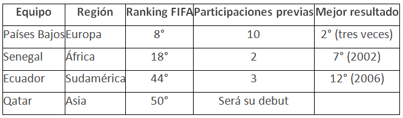
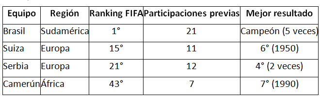

Millones de fanáticos alrededor del planeta ya empiezan a soñar con el Mundial 2022, sus partidos, cómo podría ser el camino de su selección nacional o preferida, hacia el máximo trofeo que existe en el plano futbolístico, aquí tienes una ayuda memoria que te puede ayudar a refrescar tus conocimientos.
Grupo A

Países Bajos
• ¿Cómo se clasificó al Mundial? Ganó el Grupo G de las Eliminatorias europeas.
• Rendimiento en 2022: 6-2-0 (19 GF, 9 GC, +10).
Senegal
• ¿Cómo se clasificó al Mundial? Venció en la llave decisiva a Egipto tras empatar 1-1 en el resultado global e imponerse 3-1 en la definición por penales.
• Rendimiento en 2022: 13-3-3 (34 GF, 16 GC, +18).
Ecuador
• ¿Cómo se clasificó al Mundial? Se aseguró un lugar entre los cuatro primeros de las Eliminatorias Sudamericanas.
• ¿Cómo se clasificó al Mundial? Se aseguró un lugar entre los tres primeros del Octagonal Final de las Eliminatorias Concacaf.
• Rendimiento en 2022: 6-0-4 (17 GF, 6 GC, +11).
Grupo G

Brasil
• ¿Cómo se clasificó al Mundial? Ganó las Eliminatorias Sudamericanas.
• Rendimiento en 2022: 7-1-0 (27 GF, 3 GC, +24).
Suiza
• ¿Cómo se clasificó al Mundial? Ganó el Grupo C de las Eliminatorias europeas.
• Rendimiento en 2022: 3-1-4 (8 GF, 12 GC, -4).
Serbia
• ¿Cómo se clasificó al Mundial? Ganó el Grupo A de las Eliminatorias europeas.
• Rendimiento en 2022: 5-1-2 (14 GF, 8 GC, +6).
Camerún
• ¿Cómo se clasificó al Mundial? Venció en la llave decisiva a Argelia tras empatar 2-2 en el resultado global pero imponerse por sus dos goles como visitante.
• ¿Cómo se clasificó al Mundial? Fue 2° del Grupo A de la Tercera Ronda de las Eliminatorias Asiáticas.
• Rendimiento en 2022: 10-2-3 (32 GF, 15 GC, +17).
Ghana
• ¿Cómo se clasificó al Mundial? Venció en la llave decisiva a Nigeria tras empatar 1-1 en el resultado global, al imponerse por su gol como visitante.